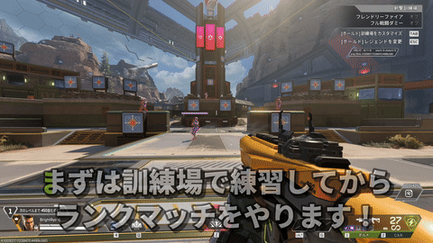
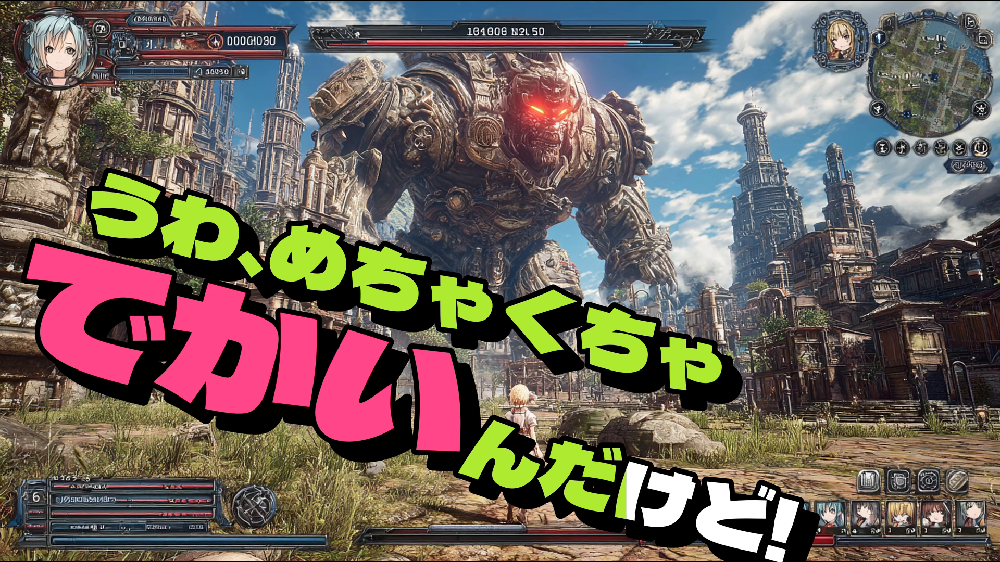

MOJIOKO
動画・配信アーカイブ・縦型動画の音声から、AI 文字起こし＆字幕作成
編集を終えた動画の、最後の工程に。すべての処理はあなたの PC で完結します。
これは何をするツールか

MOJIOKO は動画編集ソフトではありません
画像の挿入、トランジション、動画同士の連結などはできません。
動画編集を終えたあと、最後の工程でお使いください。
できあがるもの
MOJIOKO で作れる字幕の例です。

カラオケ字幕（動きのある素材）(images/out-karaoke.gif)
カラオケ表示
発話に合わせて文字の色が変わります。単語の先頭で切り替える方法と、色が流れるように塗られる方法を選べます。
※ 動きのある素材で紹介します
キーワード強調(images/out-emphasis.png)
キーワード強調
指定した文字だけ色と大きさを変えて、一言だけを目立たせられます。